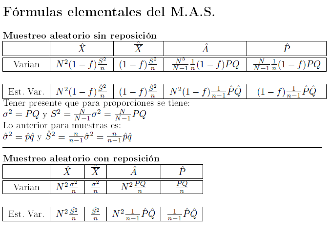

12. Introducción. Ejercicios sobre m.a.s.#
En este apartado vamos a exponer ciertos problemas sobre muestreo aleatorio simple. Recordemos a continuación las fórmulas básicas que rigen para este tipo de muestro (tanto sin reposición como con reposición).

Ejercicio: En un área existen N=10000 viviendas. Los datos de un censo anterior hacen suponer que aproximadamente los 2/3 corresponden a régimen de alquiler. Se pide:
El tamaño de muestra necesario para estimar la proporción de viviendas de alquiler, con un error de muestreo igual a 0.04 (muestreo con reposición).
Click aquí para ver la solución!
Solución.
Como estamos en el caso de un muestreo con reposición y además los datos de la proporción de viviendas en alquile P no son estimados, sino que son los de la población total, entonces utilizaremos la siguiente fórmula (sin necesidad de estimar la varianza):
En consecuencia:
En consecuencia tomaremos como tamaño muestral 139 unidades
Ejercicio. Con los mismos datos del ejercicio anterior se pide:
El tamaño de la muestra necesario para estimar la proporción de viviendas en alquiler, con un error absoluto máximo admisible de e=0.08 y un coeficiente de confianza de Pk = 0,95 (muestreo sin reposición).
Click aquí para ver la solución!
Solución.
Como el muestreo es sin reposición se tiene que:
En consecuencia:
El enunciado del problema realmente lo que nos pide es encontrar el tamaño de muestra para que se cumpla:
Ahora bien:
Siendo \(\lambda_{\alpha/2}\) el cuartil de una distribución N(0,1) que deja en la cola de la derecha una masa de \(\alpha/2=0.025\). Es decir, de forma gráfica se tendría lo siguiente:
Como podemos ver en la imagen anterior, el valor que obtenemos es \(\lambda_{\alpha/2}=1.96\), pero para nuestros cálculo vamos a redondear los decimales y vamos a tomar un valor de 2.
POr lo tanto, tendremos que
Vamos a cambiar la nomenclatura y llamamos \(k=\lambda_{\alpha/2}=2\). y en consecuencia:
En la expresión anterior despejamos n:
Poniendo en la fórmula anterior los valores correspondientes, se tiene que:
Ejercicio. Dada una población de N=1000 establecimientos que se dedican a la producción de un determinado artículo, se desea conocer el tamaño n de la muestra necesario para estimar la producción total de modo que la estimación quede dentro del 10% del valor del parámetro con una confianza de 0.95. Se supone que el coeficiente de variación poblacional C=0.6.
Click aquí para ver la solución!
Solución.
Como en el ejercicio anterior y dado que estamos ante el mismo nivel de confianza, vamos a designar
Igualmente, recordemos que en el anterior ejercicio hemos obtenido:
En el anterior ejercicio \(\theta\) era la proporción y en este ejercicio \(\theta\) sería el total que vamos a llamar X. Por lo tanto:
Como el problema nos dice que se estime la producción total de modo que esa estimación quede dentro del 10% del valor del parámetro, lo que nos está diciendo es que :
Recopilando todo lo anterior, se tendrá:
En consecuencia:
Pasando \(N^2\) del primer miembro al segundo que pasaría dividiendo obtendriamos la media poblacional y en consecuencia:
Ahora lo que hacemos es pasara \(\overline{X}^{2}\) del segundo miembro al primero que pasaría dividiendo, y entonces se tendrá:
Por lo tanto
Y C según el enunciado vale 0.6 por lo tanto \(C^2=0,36\) y en consecuencia:
Como n tiene que ser un número entero, en este tipo de problemas se suele coger el entero inmediatamente superior al número decimal obtenido con el fin de no incrementar el error de muestreo un poquito más de lo que nos dice el enunciado. Por lo tanto en este caso elegimos n=126.